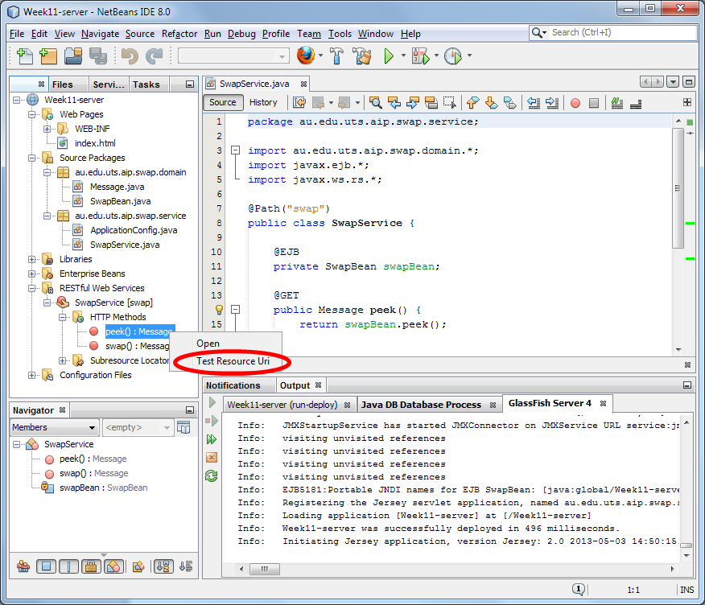

In this exercise, you will create a web service and a client that consumes a web service.
You will create a simple social "game". The idea of the game is that you can compose a short text message. You upload it to the server and in return you will receive a random response (i.e., the previous message that was uploaded by some other user).
For simplicity, you will use a Web Application project, rather than an Enterprise Application.
Create a new web application named "Week10-server":
- Select the project type "Web Application" in the "Java Web" category
- Enter the project name "Week10-server" (be sure that the project is being created in your NetBeansProjects folder, and not a folder such as NetBeansProjects\Week9)
- Use the GlassFish Server but do NOT add the project to an enterprise application
- Do not enable any frameworks
Domain Logic
First, implement the business methods.
Create two new Java classes in the au.edu.uts.aip.swap.domain package. Name them SwapBean and Message.
Use the following source code.
SwapBean.java:
package au.edu.uts.aip.swap.domain;
import java.util.*;
import javax.annotation.*;
import javax.ejb.*;
@Singleton
public class SwapBean {
private Message currentMessage;
@PostConstruct
protected void init() {
currentMessage = new Message();
currentMessage.setMessage("Coding at Bondi Beach...");
currentMessage.setTime(new Date());
currentMessage.setLatitude(-33.890843);
currentMessage.setLongitude(151.280056);
}
public Message swap(Message message) {
Message result = currentMessage;
currentMessage = message;
return result;
}
public Message peek() {
return currentMessage;
}
}
Message.java:
package au.edu.uts.aip.swap.domain;
import java.io.*;
import java.util.*;
public class Message implements Serializable {
private String message;
private Date time;
private double latitude;
private double longitude;
public String getMessage() {
return message;
}
public void setMessage(String message) {
this.message = message;
}
public Date getTime() {
return time;
}
public void setTime(Date time) {
this.time = time;
}
public double getLatitude() {
return latitude;
}
public void setLatitude(double latitude) {
this.latitude = latitude;
}
public double getLongitude() {
return longitude;
}
public void setLongitude(double longitude) {
this.longitude = longitude;
}
}
Reflect
Why is SwapBean annotated with @Singleton? What does @PostConstruct mean?
Application Configuration
Configuration of a JAX-RS web service is by an application-supplied subclass of javax.ws.rs.core.Application.
Create a class called ApplicationConfig in a package named au.edu.uts.aip.swap.service:
package au.edu.uts.aip.swap.service;
import javax.ws.rs.*;
import javax.ws.rs.core.*;
@ApplicationPath("api")
public class ApplicationConfig extends Application {
}
The "api" in the @ApplicationPath means that the RESTful web service application will be available under the sub-path named "api".
i.e., http://localhost:8080/Week10-server/api/
Web Service
Finally, you can create a resource in your web service. Create a new class named SwapResource in the au.edu.uts.aip.swap.service package:
package au.edu.uts.aip.swap.service;
import au.edu.uts.aip.swap.domain.*;
import javax.ejb.*;
import javax.ws.rs.*;
@Path("swap")
public class SwapResource {
@EJB
private SwapBean swapBean;
@GET
public Message peek() {
return swapBean.peek();
}
@POST
public Message swap(Message message) {
return swapBean.swap(message);
}
}
When you save all files, NetBeans will detect that you've created a web service.
Deploy the project by right clicking on Week10-server and selecting deploy.
Once GlassFish has started and the application is deployed, you can test the web service by right-clicking on peek() in the RESTful Web Services 'folder' and choosing "Test Resource URI" (as shown in the image below).

Your web-browser should open to an address such as the following:
http://localhost:8080/Week10-server/api/swap
A JSON (i.e., JavaScript) representation of the default message should be shown.
Reflect
Which HTTP method was used to invoke the web resource? (i.e., GET or POST?)
What method(s) of your Java code were invoked to service the request?
Why is swap in the address?
http://localhost:8080/Week10-server/api/swap
How often does JAX-RS create an instance of your SwapService class? Does JAX-RS follow the single-instance approach used by Servlets or does it use something else? Can you add some code to your project to check/confirm this?
 Single-page Web-app
Single-page Web-app